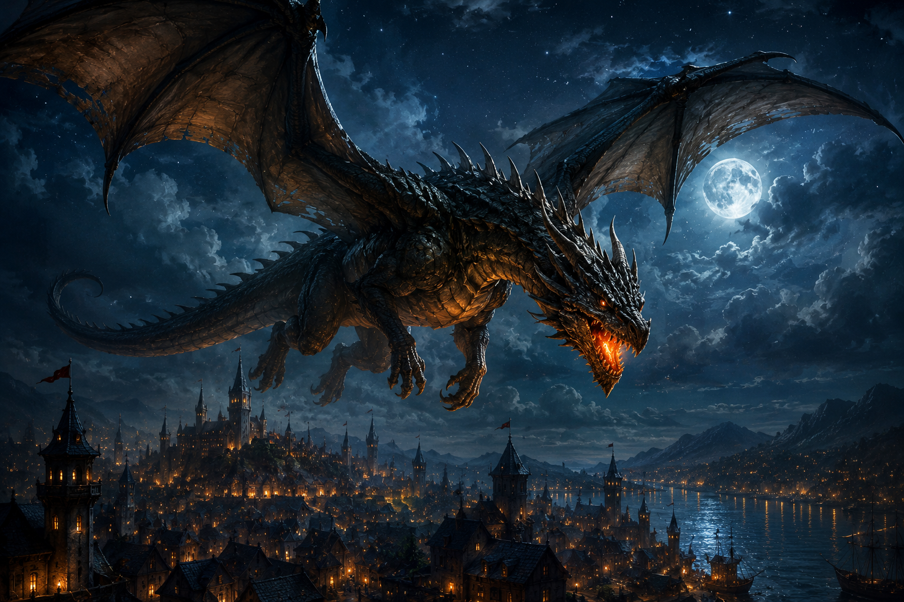
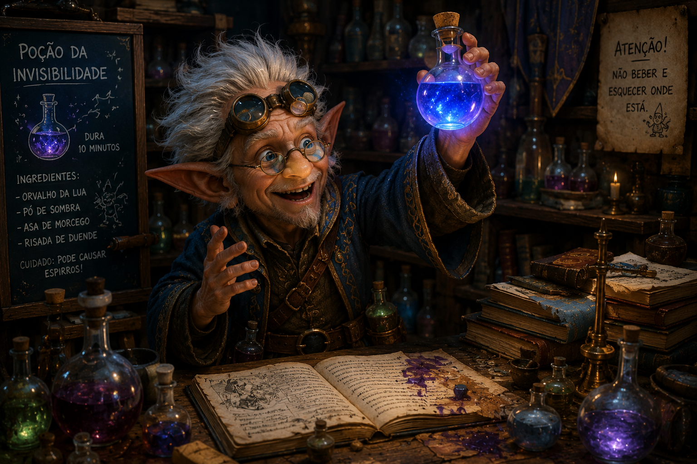
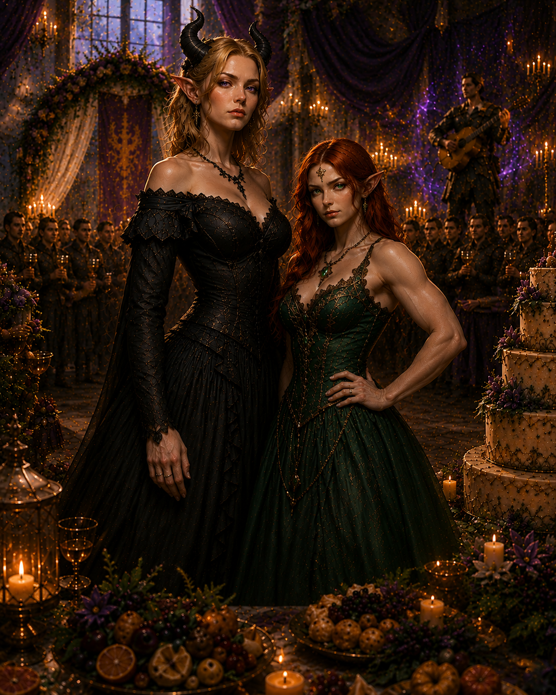

Dragão ancião acorda depois de 800 anos!

Moradores de Triporto afirmam ter visto uma criatura colossal sobrevoando o céu durante a noite.
"Eu tava lá, olhando as estrelas, quando de repente apareceu um dragão gigante! Ele tinha escamas brilhantes e olhos que pareciam chamas. Foi assustador e incrível, tudo ao mesmo tempo!" - Afirma um dos moradores entrevistados.
Conselho dos anciões se reunirá nesta tarde do Triazur de Floralua para discutir o que fazer a seguir.
Mago Gnomo Descobre Poção da Invisibilidade!

Rorov, um mago gnomo, conhecido por suas invenções malucas (E alguns diriam antiéticas), afirma ter criado uma poção que torna o usuário invisível por 10 minutos.
"Aquele segurança não pode me impedir se ele não conseguir me ver!" - Disse o mago em entrevista exclusiva.
Esperamos que o que foi dito em entrevista seja apenas uma brincadeira do mago. Fique ligado para mais atualizações!
O casamento do século!

Kira (Tiefling) e Izora (Elfa), membros da party responsável pelo resgate do príncipe herdeiro de Nova Nassur, se casaram nesta velhanera, 24 de Ruivalua.
O casamento aconteceu no palacio real de Nova Nassur, a pedido do proprio rei, que ficou tão grato pelo resgate do filho que decidiu dar a Kira e Izora uma festa de casamento de conto de fadas.
O evento contou com banquete de dar inveja com direito a todos os tipos imagináveis de pão doce, além de um show exclusivo do bardo mais famoso da região, o Elfo Rebelde.
Após o casamento, as noivas retornaram à floresta onde vivem para a sua lua de mel.
Desejamos a elas toda a felicidade do mundo e que continuem tendo muitas aventuras juntas!